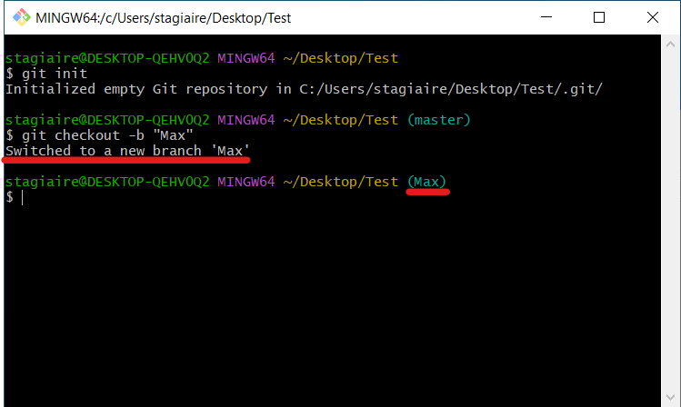

Cour nouméroooow uno
Git ? GitHub ? Kézako
Git est un logiciel de commande créé par Linus Torvald qui permet aux utilisateurs de partager leurs travails sur un dépot GitHub
Comment se présente Git ?
Comme dit plus haut Git est un panneau de commande, on peut voir que je suis identifier sous le nom de stagiaire, et que je me trouve sur le bureau.
Commande d'identification: git config user.email "le_bleue_en_devweb1@mns.fr"
Commande d'identification avec un nom: git config user.name "LeBleue"
Le commencement:
Dans un premier temps il nous faudras créé un dépot local, pour ce faire il faut créé un dossier, appelons le "Test".
Une fois se dossier ouvert nous allons effectuer un clic droit, plusieurs options s'afficherons. Celle qui nous interesse est entouré:

Comme nous pouvons le voir, nous nous trouvons bien sur le bureau (DESKTOP) et dans le fichier Test
Afin de créé le dépot local il nous faudras alors rentrer la commande "git init".

Suite cette opération, (master) s'affiche en fin de ligne pour signaler que nous somme sur la branche master (La branche maitre).
-Explication: GitHub nous permet de créé plusieurs branche de travail afin de modifier le moins possible la branche maitre qui est le coeur du projet.
-Pour laisser la branche master intact nous allons donc créé d'autres branches (branch) avec la commande "git checkout -b "nom de la branche":
Il nous faut bien un fichier a partager, nous allons prendre un simple doc.txt pour exemple:
Une fois fait, nous allons entrer la commande "git status" afin de voir les fichiers "untracked" (fichiers non suivis).
Il nous montre quel fichier est actuellement "untracked".
Pour remedier a cela il nous faut rajouter se fichiers au fichiers suivis simplement en entrant la commande "git add" "nom du fichier" ou "." afin de prendre tous les fichiers:
Quand le panneau n'affiche pas d'information suite a cette commande c'est quelle a bien etait effectuer mais nous pouvons tout de meme re-verifier en entrant la commande "git status".
Utilisation de GitHub:
Nous voila fin pret a pouvoir utiliser GitHub:
Premierement il faut se créé un compte sur GitHub, utiliser un e-mail pro est le mieux, GitHub offre un hebergement de site gratuit avec votre e-mail.
Le compte est donc créé, nous voila sur notre page GitHub.
Direction: Répositories:
Puis il nous faut créé un depot distant en appuyant sur "New", afin de pouvoir envoyé notre dépot local dessus:
Donner lui un nom et une description si voulu.
Nous pouvons voir le nombre de branche existantes dans le depot:
Maintenant que le dépot distant a etais créé il nous faut alors mettre en relation le depot local et le distant. Pour ce faire on va entrer la commande git remote add origin "l'url du dépot créé"
Afin de trouver l'url desiré rendez vous sur le projet souhaiter, cliquer sur le bouton "Code", une fenetre s'ouvre et vous avez l'url souhaiter qui s'affiche:
Nous pouvons donc enfin mettre en relation les deux dépots avec la commande donnée plus haut (git remote add origin url):
Comme vu precedemment si le panneau n'affiche aucune erreur c'est que la commande a bien etais prise ene compte.
Maintenant que les deux serveurs sont mis en relations, il nous faut envoyé le fichier: "Fichiers-dev" sur le dépot distant.
Pour se faire il nous faut "push" (pousser) nos nouvelles info du dépot local vers le dépot distant.
GitHub fonctionne sur la logique du "pull"/"push" donc pas de LegDay c'est génial. Yeaaaah BUDDY.
!WARNING! Le push ne marchera que si vous avez effectuer au préalable un "commit" !WARNING!
Mais KEZAKO ? C'est celui qui fait la plonge ? Le commit de cuisine ? Non non petit, c'est une validation des modifications que tu as apporter a ton code ou tes fichiers.
Nous allons donc entrer la commande: "git commit -m "First modif"
KEAZAKO "-m" ?! Le "-m" est une options, qui ajoute le fait d'accompagner ton commit d'un petit message, le plus court, clair et concit possible pour faciliter la comprehension d'autres dev potentiel.
Mise en application:
Avant de pouvoir push nos infos, il faut push notre branche de travail (Max)
Pour se faire nous allons utiliser la commande: "git push --set-upstream origin nom de la branche".
Puis faire un push total de nos informations.
La ligne en dessous de la commande entrer nous indique tout c'est bien passer.
Nous pouvons retourner sur GitHub, aller voir nos dépot distant et constater plusieurs changements: le nombre de branche, le fichier ajouté, la totalité du commit ainsi que le message precisant ce qui a etais fait.